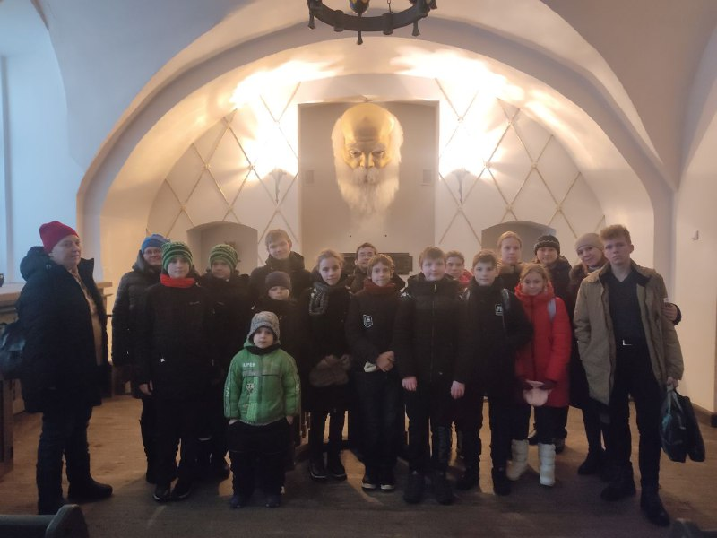
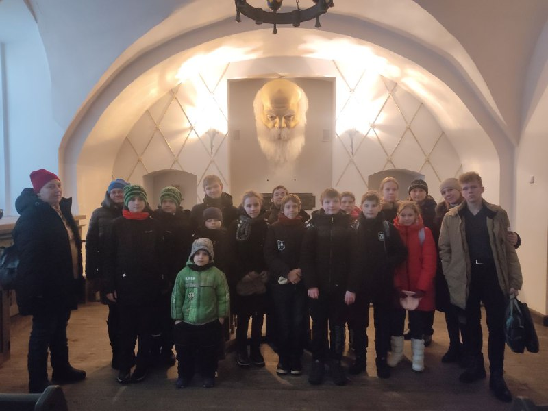

Иезуитский Коллегиум
Сразу после вхождения Полоцка в состав Речи Пасполитой в городе появились иезуиты. Получив поддержку великого князя литовского и короля польского Стефана Батория, а также крупные земельные владения в городе и его округе, они развернули активную деятельность по расширению влияния католической церкви в регионе. В 1580 г. был открыт Полоцкий иезуитский коллегиум - первое среднее учебное заведение ордена на территории современной Беларуси. В коллегиум принимали детей любого вероисповедания, обучение в нём длилось 8-9 лет и было бесплатным.
Пройди тест для закрепления результата.
Тест